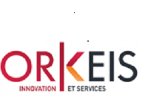
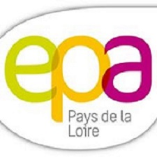

Le CV de Jules Amelot
Le CV de Jules Amelot
Mes Experiences professionelles
Dans mon parcours scolaire j'ai eu la chance d'avoir la possibilité de faire plusieurs stages et autres expréiences professionelles.
 | dès la quatrième après avoir eu 14 ans j'ai fait un stage du 10 Avril 2017 au 14 Avril 2017 dans l'entreprise ALTER. Ce stage m'a permis de découvrir le métier d'infographiste, et de prendre en main une tablette graphique pour utiliser des logiciels comme Photoshop. |
| Ensuite mon stage obligatoire de troisième d'une semaine aussi du 15 janvier 2018 au 19 janvier 2018 s'est déroulé dans l'entreprise Orkeis. J'ai découvert la programmation et plusieurs languages comme le c#, le java ou encore le python. |  |
|  | Durant cette même année de troisième j'ai participé à un projet avec une association se nommant EPA ( Entreprendre Pour Apprendre) Cette association permet à des élèves allant de la troisième au poste BAC de créer une mini-entreprise. Pour ma part l'entreprise s'apellait progate, et nouss fabriquions des bougies naturelles à la cire d'abeil. cette expérience m'a permis de comprendre comment fonctionnait une entreprise, quel etais les postes fondamentaux et la difficulté à gérer une entreprise si petite qu'elle soit, car oui j'ai postulé pour deux postes : directeur financier et PDG, et j'ai été retenue en tant que PDG de l'entreprise Progate. |
| J'ai refait un stage l'année d'après en seconde durant 7 jours dans une entreprise de maintenance informatique : UPLINK. Durant ce stage j'ai pu apprendre le métier de technicien informatique, j'ai eu plusieurs taches comme monter une tour, remplacer des composants de pc portable ou installer un OS (type Windows), et des logiciels. |